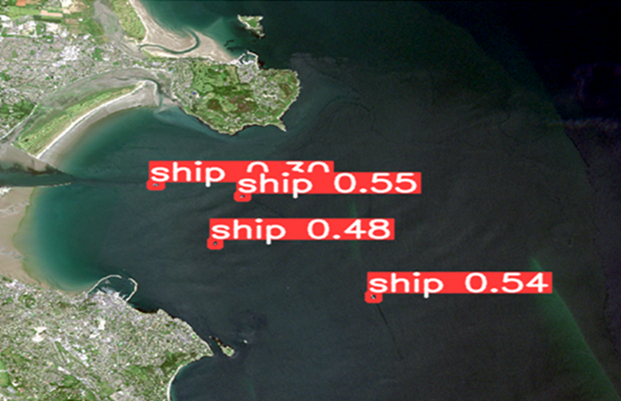

Use cases
Interactive tutorials and contextual help to guide users
Fooding near Ballybay, Co. Monaghan, 12 Dec 2015

Maritime Traffic Application: Ship detection from Remote Sensing images around Dublin port

AI-Powered Flood Mapping and Prediction
Hedgerows identification and change detection using CAMEO capabilities
Map Alerts